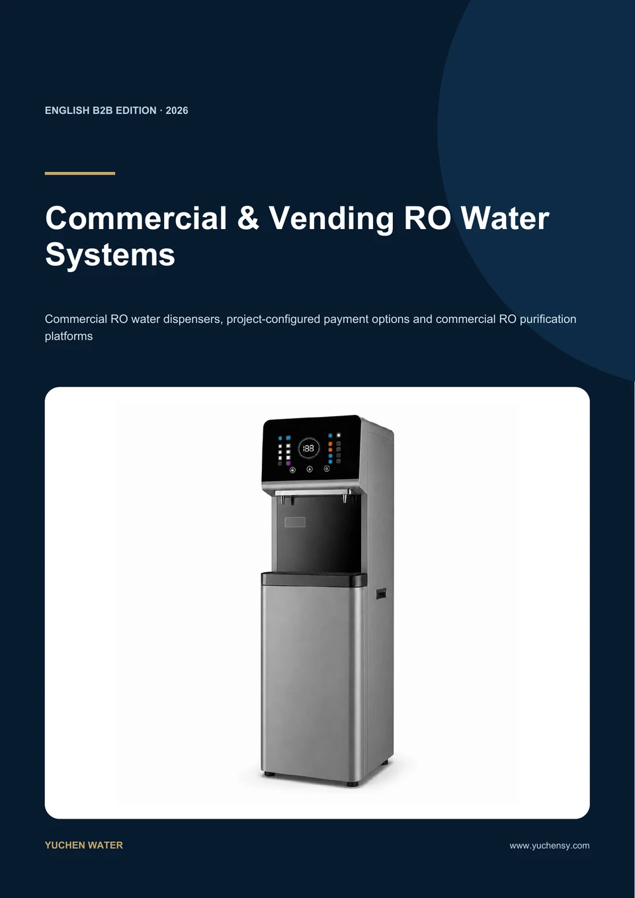

Commercial RO Water Dispenser
The neutral name for commercial projects. The unit can be supplied with or without a payment system, depending on the customer's project requirements.
Payment System: OptionalCompare 23 evidence-traced commercial RO dispenser and purification-system configurations, including models that can be engineered with or without an optional payment system.
Technical facts are source-traced; production configuration still requires written engineering confirmation.

The catalog separates neutral commercial dispenser terminology from confirmed self-service vending configurations so buyers can compare systems without exaggerated payment claims.
The neutral name for commercial projects. The unit can be supplied with or without a payment system, depending on the customer's project requirements.
Payment System: OptionalUsed only after self-service dispensing, water metering and payment functions have been confirmed for the selected configuration.
Metering + payment must be confirmedEvery field helps us identify a real B2B project and recommend the correct output, voltage, feed-water and payment configuration.
Yes. Supply can be specified with or without payment according to the project.
Card, QR, coin or other options are not claimed until an engineer confirms the selected integration and target market.
They reproduce the source catalog facts. Final production specifications require written technical confirmation.